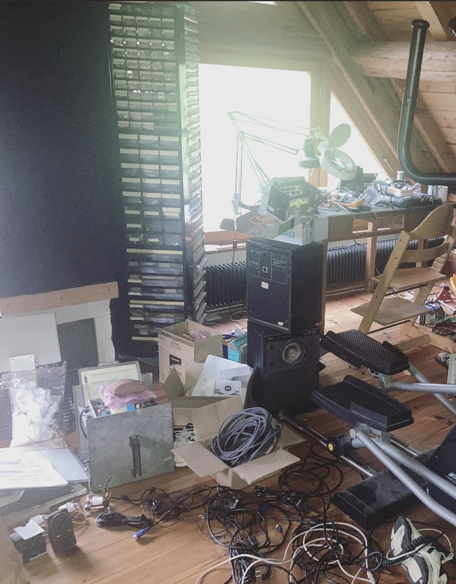
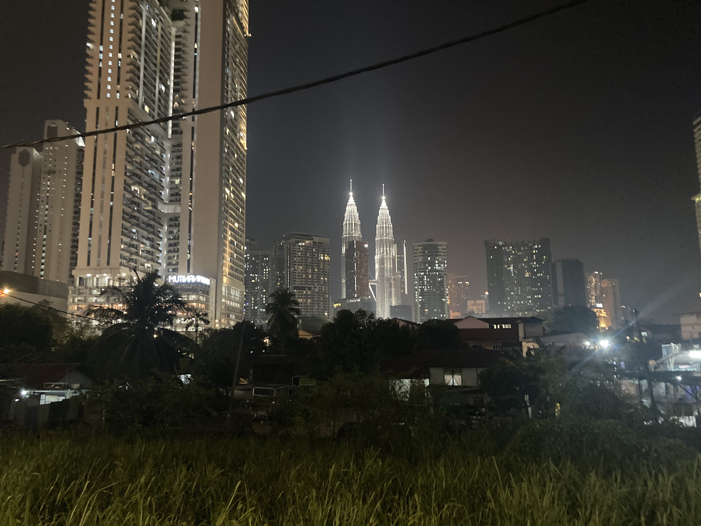

computer vision & art #1 : imaginary landscapes
observation
Last time I was at my uncle's place in Alsace, in his electronics workshop. Complete chaos. Components everywhere, documentation scattered, cables tangled, speakers stacked on top of each other, a chair in the middle of it all. Nothing in its right place.
Then my attention fixes on this tower of electronic components—hundreds of resistors and capacitors stacked vertically, layer upon layer.

I'm someone who daydreams way too much. And I start fixating completely on this tower. It reminds me of something. I don't know what yet.
Then it hits me : this view Walid and I had in Kuala Lumpur. We were in this sort of informal settlement with houses that made no architectural sense, grass, concrete, trees, a power line, and in the distance, the massive Kuala Lumpur skyline, majestic.

I'm looking at the tower but I'm not there anymore. The tower becomes architecture. The clutter becomes urbanism. The workshop dissolves into something else entirely.
This is how memory works, I think. Surfaces map onto other surfaces. A pile of electronics is a skyscraper if the correspondence is strong enough.
correspondence
Then I remember this course in computer vision where we learned to superimpose two images with the right projection: homographic projection.
Brian Eno describes his ambient works as "landscapes " : places that exist in the intersection of observation and projection. In the 1989 documentary of the same name, Eno walks through actual landscapes : California, Suffolk, New York while explaining how these physical spaces inform his mental ones. The instrumental pieces he creates aren't illustrations of place, but rather landscapes for the mind, spaces you inhabit perceptually rather than physically.
The Shutov Assembly, released around that time, exemplifies this. Each piece has a nine-letter title referring to a real location without being in any way illustrative. The music exists parallel to the place, not as its representation.
What if landscape is always already imaginary? What if space is just perspective waiting to be transformed?
Homography projection : a method for mapping one planar surface onto another through mathematical transformation.
x' = H x
Where x is a point in image 1 and x' is its corresponding point in image 2.
H = K'(R - t nT/d) K-1
Where:
- K, K' are the intrinsic camera matrices
- R, t describe rotation and translation between cameras
- n, d define the plane's normal and distance
In practice: select four corresponding points between two images. The algorithm calculates the transformation matrix. Apply the warp. Blend at varying ratios.
The code is minimal:
# Load images
img1 = cv2.imread("electronic_mess.jpeg")
img2 = cv2.imread("kl_skyscrapers.jpg")
# Select 4 corresponding points on each image
pts_img1 = [[x1,y1], [x2,y2], [x3,y3], [x4,y4]]
pts_img2 = [[x1',y1'], [x2',y2'], [x3',y3'], [x4',y4']]
# Calculate homography
H = cv2.getPerspectiveTransform(pts_img2, pts_img1)
# Warp and blend
warped = cv2.warpPerspective(img2, H, (width, height))
result = cv2.addWeighted(img1, 0.5, warped, 0.5, 0)
What interests me isn't the complexity : it's the compression. Four points. One matrix. Two realities collapse into a third space that belongs to neither.
The result: Kuala Lumpur rising from tangled cables. Malaysia superimposed on Alsace. Neither location is preserved. Both are present.
And I'm not going to lie : I'm pretty damn proud of the result.
The 50-50 blend reveals something—not quite synthesis, more like interference. The two towers—one of components, one a skyscraper—superimpose majestically. A desk lamp becomes a street light. Cables everywhere suggest power lines crossing the urban grid. The scattered documentation and stacked speakers read as buildings. The glow of the skyscraper bleeds through the scene. Two forms of chaos layered into one.
It's not realistic. It's not supposed to be. It's a study in correspondence—how one surface can activate the latent structure in another.
synthesis
There are far more parallels in our lives between different entities than we think. The electronics workshop is just as much a place with active life as the megalopolis of Kuala Lumpur. Both are systems of density, accumulation, energy. Both are chaotic in their own ways. Both contain their own logic.
The workshop is still a mess. The tower of electronics hasn't moved. But now it contains Kuala Lumpur as superposition. A third space that exists only in the projection, only in the mathematical transformation of one perspective into another.
This is what computation offers: the ability to materialize dreams, to take what exists only in perception and make it concrete. The algorithm honors a fleeting association, a daydream that might otherwise dissolve. It doesn't demand realism : it demands correspondence.
I've been trying to get into ambient music production myself (pretty mediocrely so far, I'll admit), but this project made me happy : being able to use my engineering skills in the materialization of ideas. There's nothing more real than a dream when you give it permission to exist.
I think about Eno's Thursday Afternoon. In the documentary, he describes it as the feeling of arriving in a new city : that specific moment of disorientation and anticipation. Slow, luminous synthesizer tones that shimmer and dissolve. Textures layering, never quite resolving. The sound moves like memory moves—gradual, atmospheric, suspended between observation and imagination.
Sometimes the most interesting landscapes are the ones that never existed until you decided they did.